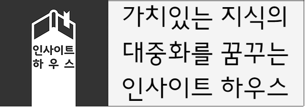
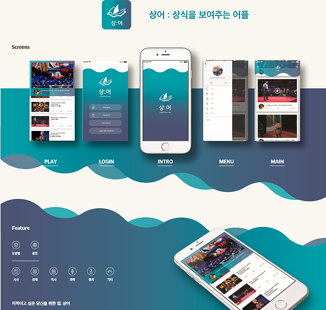

인사이트 하우스는 성균관대 C-School Project 대회를 참가하면서 시작했던 상어 프로젝트에서 발전한 프로젝트입니다. 초기에 생각했던 막연한 컨셉은 여러군데 산재해 있는 데이터를 모아서 유의미한 내용을 파악하고 이를 사람들에게 전달하는 것이었습니다. 하지만 애초 기획했던 한 가지 기획 목적에 맞는 폭넓고 질좋은 데이터들을 찾는 것이 매우 어려웠습니다. 당시 저희 팀의 지도 교수님이셨던 배상훈 교수님(성균관대 교육학과)께서는 특정한 수요가 있는 타겟을 정하고 교육적 목적으로 데이터를 가공해서 전달하라는 조언을 해주셨습니다.
위에 나열한 세 가지 컨텐츠는 최근 매우 주목을 받고 있는 컨텐츠들입니다. 셋의 공통적인 특징은 많은 데이터를 정확하고 깔끔하게 축약해서, 보는 사람이 쉽게 수용할 수 있도록 제작되었다는 점입니다. 상식 중에서 정치, 경제, 역사 등의 분야에서 가장 기초를 알려주고, 책을 짧고 알기 쉽게 요약하고, 논쟁이 벌어지고 있는 가운데 정확한 사실을 짚어줍니다. 갈수록 데이터가 방대해지는 현대에서는 신빙성있는 데이터를 선별하여 축약한 컨텐츠에 대한 수요가 급증하고 있습니다. 또 정보의 비대칭성이 높아져감에 따라서 정보를 가진 사람들이 그렇지 않은 사람들에게 부당한 경제적 이득을 챙기는 상황이 빈번해지고 있습니다. 현대에 이런 상황을 고해서 바로 선별된 상식 관련 영상을 모아서 보여주는 어플리케이션 '상어'를 기획했습니다.

하지만 이는 기존 동영상 큐레이팅 서비스와의 차별점이 떨어졌고, 동영상 컨텐츠 시장은 Youtube라는 거대한 벽이 있기 때문에 큰 한계점이 있었습니다. 다른 사람들이 만들어 놓은 동영상들만을 모아서 보여주는 방식을 내려놓기로 했습니다. 조금 더 우리만의 색깔을 입히기 위해서 독자적 컨텐츠를 만드는 방안을 택하기로 했습니다. 사람들이 궁금해하고 삶에 유익한 가치로운 주제를 정해서 그에 관련된 데이터를 분석하고 이를 디자인을 통해서 카드뉴스, 동영상, 줄글의 형태로 SNS에 발행하는 방향으로 정했습니다. 이로 인해서 팀원들이 가진 통계, 심리, 컴퓨팅, 교육, 컴퓨팅, 디자인에 대한 재능을 모두 발휘하면서 강력한 시너지를 발휘할 수 있게 됐습니다. 큰 방향을 정하면서부터 프로젝트의 이름을 인사이트 하우스(Insight Haus)로 변경했습니다.
인사이트 하우스라는 프로젝트 팀 명칭은 사람들에게 통찰력(Insight)를 주는 가치있는 지식을 모아놓는 집이라는 뜻입니다. 누구나 다 이 집에 들어와 지식을 향유할 수 있죠. 맨 위쪽에 있는 로고를 보시면 지식을 담은 책에서 빛이 나와서집의 모양을 만들고 있는 것을 보여주고 있습니다. 현재 주된 컨텐츠 제작 형태는 카드 뉴스입니다. 어느 장소에서나 손쉽게 데이터 걱정없이 볼 수 있는 컨텐츠이기 때문입니다. 순수 텍스트나 동영상 등의 형태로 계속 범위를 넓혀나갈 생각입니다.
아래 이미지는 이제까지 제작한 카드뉴스입니다. 클릭하시면 해당 페이지로 연결됩니다.